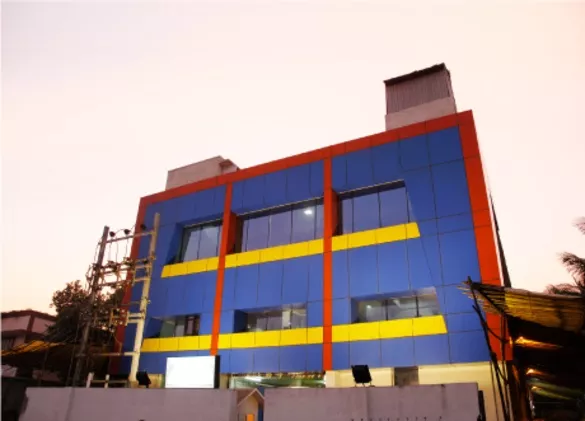
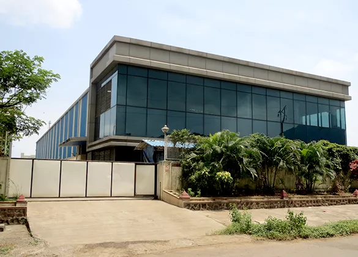
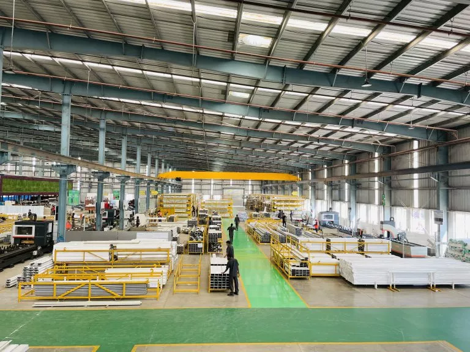
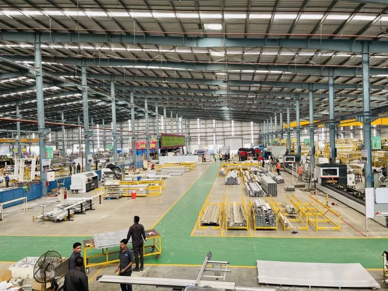
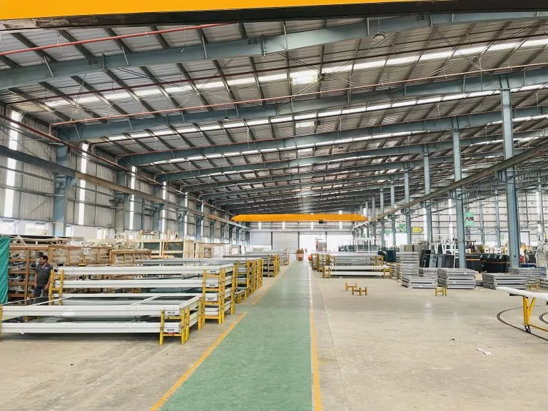
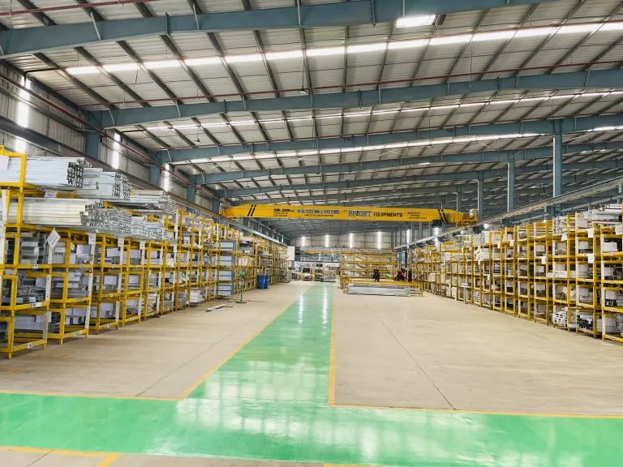

At GWS, sustainability means pairing high-quality engineering with advanced CNC machinery to minimize errors and drastically reduce material waste.
Over the last three decades, our team of experts and strategically located manufacturing facilities across India, have enabled the successful execution of numerous premier flagship projects worldwide.
Possessing deep industry insights and invaluable experience, our design and engineering teams leverage cutting-edge technology to create unique façades. Glass Wall Systems are built to meet American, Australian, New Zealand and British standards, having been designed and tested in state-of-the-art laboratories across the globe.
Innovative Design and Engineering
Backed by deep industry insight and decades of experience, our design and engineering teams leverage cutting-edge technology to deliver bespoke façade solutions.
Globally Tested and Certified
Built for global compliance, our products are designed and performance-tested in world-class laboratories to meet American, Australian, New Zealand, and British standards.
0
Square Feet Manufacturing Area
0
Square Feet Panels Production Capacity Per Day
0
Dedicated Production Lines for Unitized Systems, Doors and Windows
0 +
Factory Strength of Well-Trained Personnel
0mm
X 8000mm Glass Panels Handling Capacity
Streamlined Manufacturing Processes
Our consolidated processes and improved logistics are key to ensuring that our façade solutions are delivered without any hassles. Dedicated areas for glass pasting, aluminium stacking, assembly and dispatch and packing along with in-house powder coating and sheet fabrication units make us one of the few self-sufficient end-to-end production facilities. There are four dedicated production lines for unitized systems, doors, and windows for high efficiency. High levels of automation have also reduced the need for manual handling so that glass panels are delivered in pristine condition.






State-of-the-Art Technology:
- European CNC machining centres
- European CNC double head cutting centres
- 3 Clean Room Glazing units
- Graco glazing pumps
- Conveyorized powder / PVDF / wood finish coating lines
- Laser CNC machines for break metal
- Turret punch CNC machines for break metal
- All factories equipped with overhead cranes, forklifts and automatic glass handling equipment
- CNC Setup of Break Metal
Integrated Manufacturing Strength
- In-house powder coating, PVDF coating and wood finish coating plants having a combined capacity of coating over 70,000 sq. ft. per day.
- Approved applicators for all leading paint and powder suppliers like Jotun, Akzonoble, PPG, DNT, Interpon Beckers, Berger, Monopol thus offering extended warranties up to 25 years.
- In-house sheet metal fabrication unit with production capacity of over 200 metric tons per month.